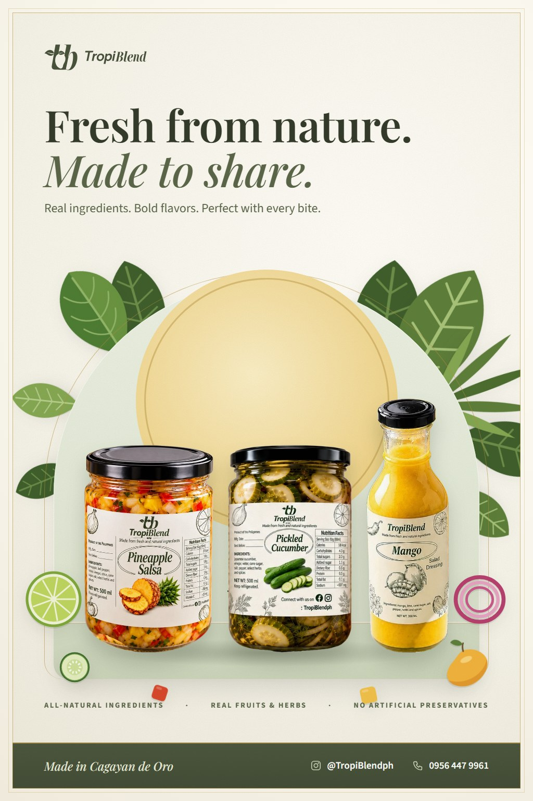
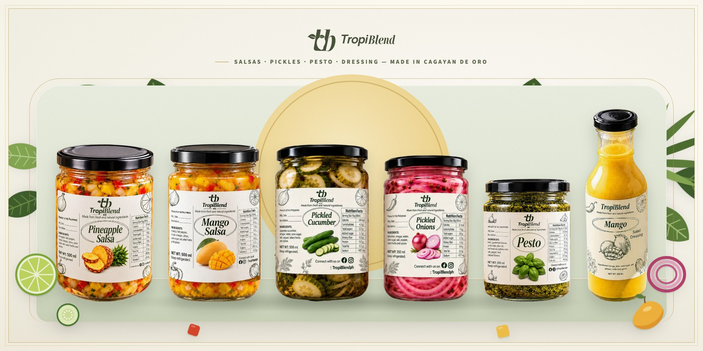
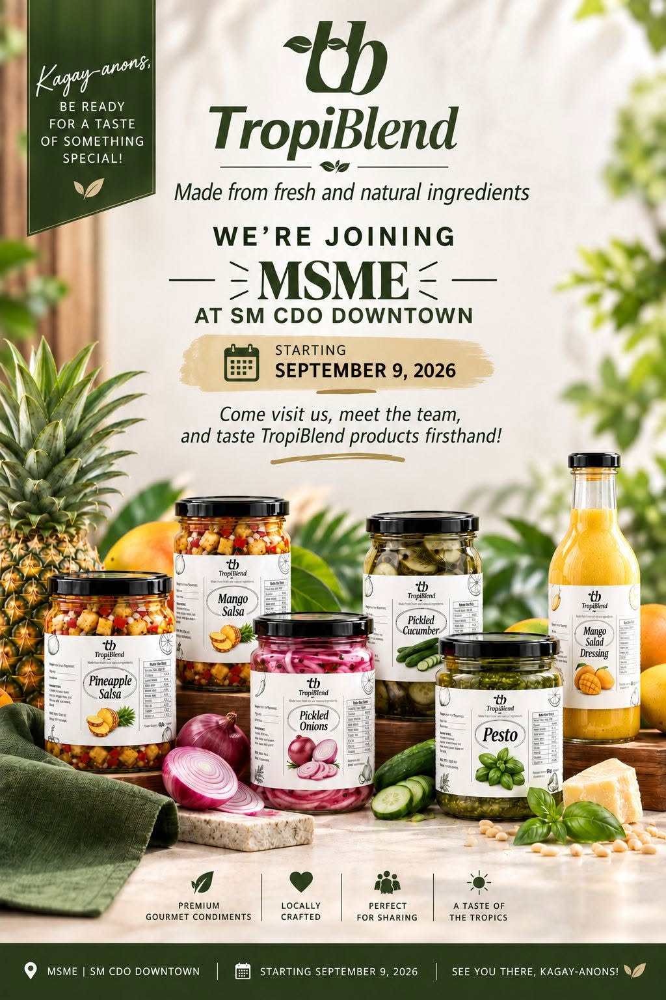
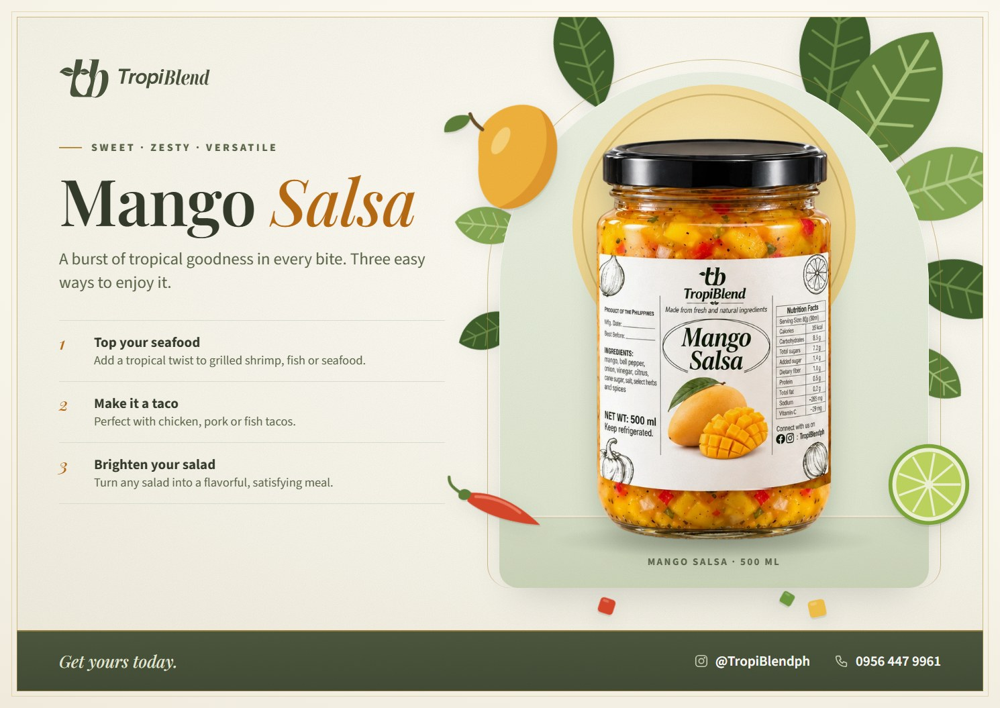
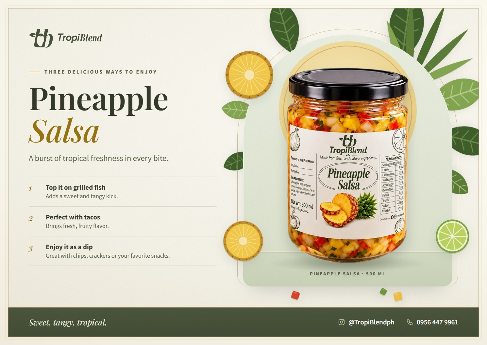
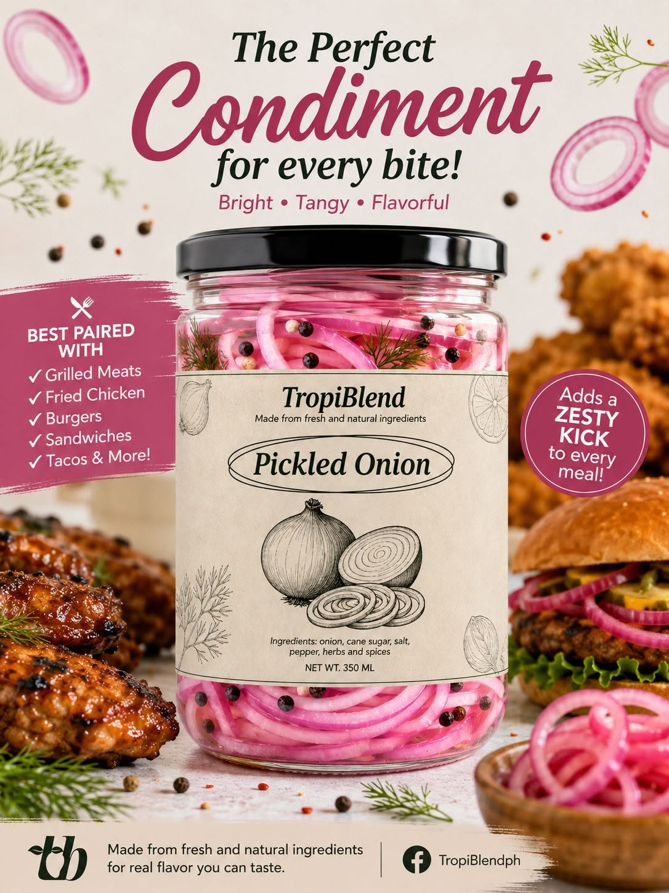
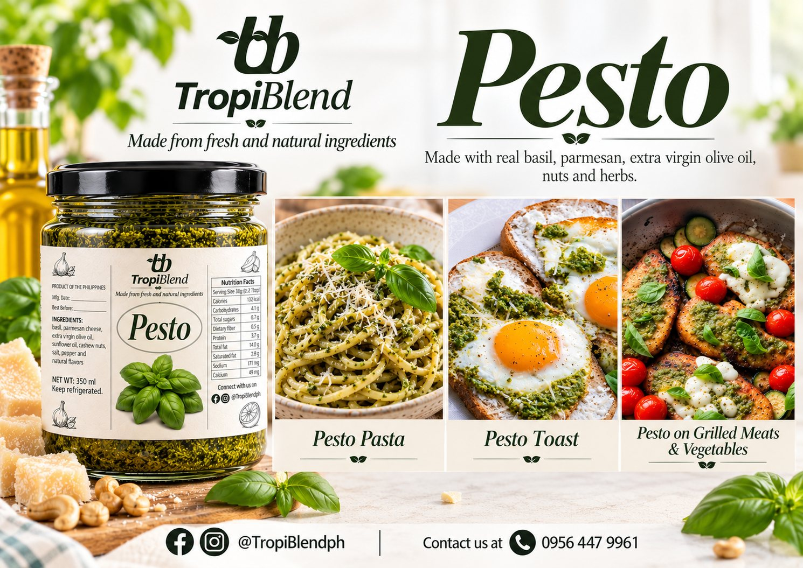
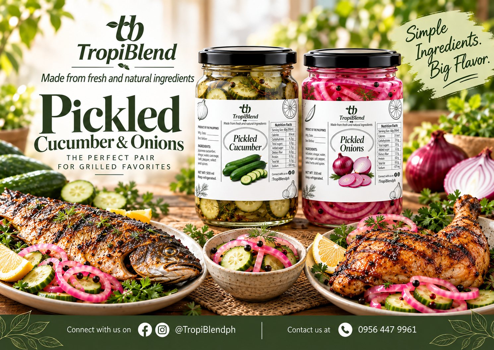
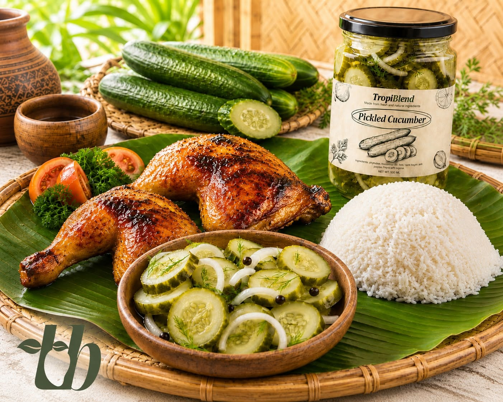

The TropiBlend blog
Recipes, serving ideas & answers
Everything you've asked us about our salsas, pickles, pesto and mango dressing, from what to pair them with to how to keep them fresh. Made in Cagayan de Oro.
-

ingredients
Are TropiBlend Products All Natural? What's Really in Each Jar
Yes, every TropiBlend product is made from fresh, natural ingredients with no artificial preservatives. Here is the full ingredient list for all six.
-

about
What Is TropiBlend? Gourmet Condiments Made in Cagayan de Oro
TropiBlend is a Cagayan de Oro food brand making salsas, pickles, pesto and mango dressing from fresh, natural ingredients. Here's what we make and why.
-

ordering
Where to Buy TropiBlend in Cagayan de Oro (CDO)
Looking for TropiBlend salsa, pickles or pesto in CDO? Order direct on Messenger, by phone or email, or find us at local fairs like the MSME fair at SM CDO.
-
ordering
How to Order TropiBlend: Messenger, Phone, Email or Form
A step-by-step guide to ordering TropiBlend salsas, pickles, pesto and mango dressing in Cagayan de Oro, plus what to include so your order is confirmed fast.
-

mango salsa
What to Eat With Mango Salsa: 10 Easy Ideas
Mango salsa goes with far more than chips. Try it on grilled fish, shrimp, chicken, tacos, salads, rice bowls and more. Here are 10 easy ideas.
-

pineapple salsa
What to Eat With Pineapple Salsa: Fish, Tacos, Pork and More
The best foods to pair with pineapple salsa, from grilled fish and shrimp tacos to lechon kawali and chips, with simple serving tips for each.
-

pickled onion
12 Ways to Use Pickled Onions (Beyond Burgers)
Pickled onions brighten grilled meats, fried chicken, silog, tacos, sandwiches, salads and more. Here are 12 ways to use a jar of TropiBlend Pickled Onion.
-

pesto
How to Use Pesto: 12 Ideas Beyond Pasta
A jar of pesto can do much more than pasta. Spread it on pandesal, swirl it into eggs, marinate chicken, top pizza and more. 12 easy ideas.
-

filipino food
Best Condiments for Inihaw: Beyond Toyomansi and Suka
Take your inihaw, sinugba and Filipino BBQ further with pickled onion, pickled cucumber and fruit salsas. What to pair with liempo, chicken, fish and pork BBQ.
-
gifts
Food Gift and Pasalubong Ideas From Cagayan de Oro
Looking for a unique, locally made pasalubong or food gift from CDO? Gourmet salsas, pickles, pesto and mango dressing make thoughtful Kagay-anon gifts.
-

pickled cucumber
Pickled Cucumber vs Atchara: What's the Difference?
Atchara is Filipino pickled green papaya; TropiBlend Pickled Cucumber is crisp Japanese cucumber with dill and lime. How they compare and when to use each.